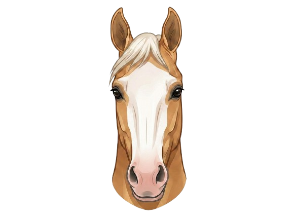

Poll
The poll is the very top of the horse’s head, between the ears. Face markings do not usually appear here, but it is the highest reference point on the head.
Before face markings can be identified, it helps to understand the basic parts of a horse’s face. Knowing these areas makes it much easier to see where markings are located and how they are named.
Face markings are named based on where they appear on the horse’s face. For example, a star is found on the forehead, while a snip is found on the muzzle.
Learning the main face regions first makes it easier to understand and remember each marking.

When looking at face markings, it helps to move from the top of the head down. This is also the order used when describing markings in records.
The poll is the very top of the horse’s head, between the ears. Face markings do not usually appear here, but it is the highest reference point on the head.
The forehead is the area between the eyes and below the forelock. This is where star markings are found.
The middle part of the face runs from below the eyes down toward the muzzle. Stripes and blazes are found in this area.
The muzzle is the soft lower part of the face, including the nostrils and upper lip. Snips are found here.
The nostrils are used for breathing. Some snips may extend into or around this area.
The lowest part of the face. Larger markings, like wide blazes or bald faces, may extend into this area.
💡 Did You Know
Even though many horses share the same types of face markings, no two are exactly alike. The size, shape, and placement make each horse’s face unique.
Look at the poll and forelock. Notice where the coat color begins to change into white markings.
Look between the eyes. This is where star markings are found.
Look down the center of the face. Narrow markings are usually strips, while wider markings are blazes.
Look around the nostrils and upper lip. White markings here are called snips.
Pay attention to how far the marking spreads and where it reaches on the face.
Area between the eyes where stars are found.
Center of the face where strips and blazes appear.
Lower face where snips are found.
